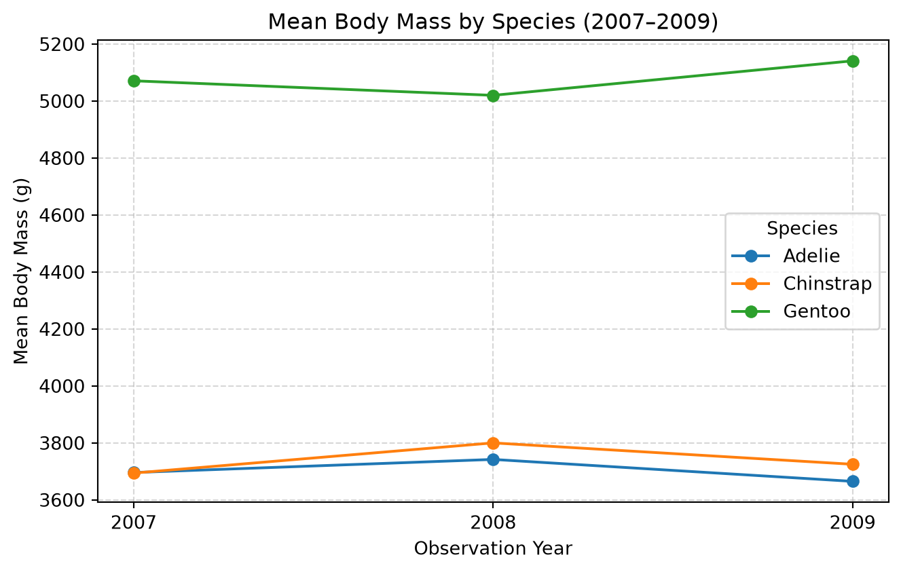

Trends in Penguin Body Mass by Speicies (2007–2009)
Author
Chloe Surbeck
Published
September 22, 2026
Introduction
We have done a lot of work in DSCI 523 using palmerpenguins dataset. I wanted to see how the body_mass (g) of these penguin species (Adelie, Chinstrap and Gentoo) changed over the year (2007 - 2009).
Data source: Palmer Penguins, Palmer Station Antarctica LTER.
Setup & Data Ingestion
Please load the required Python libraries below.
import pandas as pdimport matplotlib.pyplot as pltfrom palmerpenguins import load_penguinspenguins = load_penguins()penguins.head()
species
island
bill_length_mm
bill_depth_mm
flipper_length_mm
body_mass_g
sex
year
0
Adelie
Torgersen
39.1
18.7
181.0
3750.0
male
2007
1
Adelie
Torgersen
39.5
17.4
186.0
3800.0
female
2007
2
Adelie
Torgersen
40.3
18.0
195.0
3250.0
female
2007
3
Adelie
Torgersen
NaN
NaN
NaN
NaN
NaN
2007
4
Adelie
Torgersen
36.7
19.3
193.0
3450.0
female
2007
Body Mass Summary by Species
# clean raw penguins data by indexing relevant columns and removing rows with missing values (using .dropna())clean_penguins = penguins[["species", "year", "body_mass_g"]].dropna()# get average mass (using group.by) for species by year, get mean (.mean) and round to/display whole numberannual_mass = clean_penguins.groupby(["species", "year"])["body_mass_g"].mean().round(0).astype(int)# print annual-penguin-massannual_mass
From annual_mass we can observe that Gentoo penguins are the heaviest species across all years.
Reshaping for Yearly Comparison
As practiced in DSCI 511 Worksheet 6, when working with a multi-level grouped object, we can use .unstack() to move the year index into columns for a side-by-side comparison:
# Unstack the year index level into columnsannual_mass_table = annual_mass.unstack(level="year")annual_mass_table
year
2007
2008
2009
species
Adelie
3696
3742
3665
Chinstrap
3694
3800
3725
Gentoo
5071
5020
5141
From this table, we observe: * Adélie: Rose from \(3,696\text{ g}\) in 2007 to \(3,742\text{ g}\) in 2008, before dipping slightly to \(3,665\text{ g}\) in 2009. * Chinstrap: Peaked in 2008 at \(3,800\text{ g}\) and settled at \(3,725\text{ g}\) in 2009. * Gentoo: Dipped slightly in 2008 to \(5,020\text{ g}\) before reaching their highest recorded weight of \(5,141\text{ g}\) in 2009.
Descriptive Statistics (DSCI 551)
Using .describe() from DSCI 511 and DSCI 551, we examine the overall distribution of body mass (mean, standard deviation, quartiles) across the three species:
Using Matplotlib (as introduced in the DSCI 511 Appendix), we transpose our unstacked table so year is on the x-axis and plot the annual trajectories:
# Transpose the table so years are rows, and plot each species as a lineax = annual_mass_table.T.plot(marker="o", figsize=(7, 4.5))plt.title("Mean Body Mass by Species (2007–2009)")plt.xlabel("Observation Year")plt.ylabel("Mean Body Mass (g)")plt.xticks([2007, 2008, 2009])plt.grid(True, linestyle="--", alpha=0.5)plt.legend(title="Species")plt.tight_layout()plt.show()

Figure 1: Annual mean body mass (g) across Palmer Penguin species from 2007 to 2009.
The visualization demonstrates that across all three years, the weight separation between Gentoo penguins and the other two species remains consistent, with only modest year-to-year variation within each species.